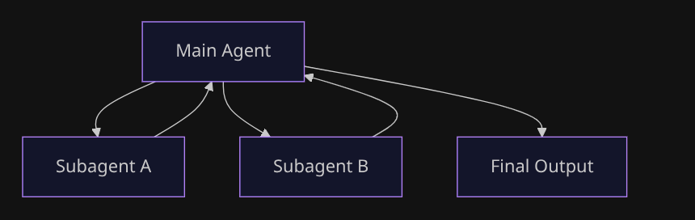

Anatomy of Subagents
March 1, 2026 • 7 min read
Table of contents
Prerequisites: Python, basic idea of agents, tools, memory. Rest will be taken care of :)
The Agent Loop
An agent, at its core, is a simple loop.
At the center is an LLM. Around it, we add tools (to interact with systems), messages/history (to carry context), and some control logic (retries, validation, stopping conditions). Together, these pieces form what we call an agent.
A simplified run-state looks like this:
{
"messages": [
{"role": "user", "content": "what is 2+3"}],
"tools": ["add", "search", "calendar"],
"memory": {
"conversation_history": []
},
"done": false
}Each iteration updates this state:
- Model reads messages + tools
- Model emits either:
- final output, or
- a tool call request
- Tool result is appended back to messages
- Loop continues until
done = true
So fundamentally:
agent = function + loop + memory + tool calls
This becomes a bit problematic when we look at the fact that each agent run needs to account for its memory history, tool calls, its own history, and the subsequent answer.
This piles up pretty quickly and becomes bloated with each step we take.
In turn clogging up the context window and slowing down the agent to do complex tasks for long runs.
This is where we introduce subagents.
What Is a Subagent
Subagents (if we put it simply) are just nested agent runs.
A main agent starts another agent (on the side) for narrower tasks and gets back an output from the side run. It then continues with a more refined, specialised output.
Like a parent branching out its children to do individual special tasks - the final output is a culmination of all these small task outputs.
This helps save the agent a lot of context, reduces bias, and decouples a lot of load from the main agent stream.
To keep behavior predictable, pass explicit inputs instead of dumping full context blindly - a task description, an optional context slice, constraints, and the expected output format. This keeps subagent runs tighter and easier to reason about.
The Flow
When we run a subagent, the flow is usually:
- Main agent gets input and decides next action (tool call / end / delegate)
- Parent runs child:
child.run(...) - Child gets its own isolated run loop/state
- Child returns output (or error/timeout)
- Parent receives that output (not necessarily full child history)
- Parent continues or ends
Making It Work
Here's the thing - to use a subagent, you literally just wrap it as a tool:
( Tools being simple functions with a return value that you give to an agent to interact with the real world )
# create a simple subagent
math_agent = Agent(
model="openai:gpt-4",
system_prompt="You are a math expert. Solve problems and return just the answer."
)
# Wrap as a tool
def ask_math(task: str) -> str:
result = math_agent.run_sync(task)
return result.output
# Main agent uses it
main_agent = Agent(
model="openai:gpt-4",
tools=[ask_math],
system_prompt="Use ask_math for any mathematical calculations."
)
That's it. The main agent sees ask_math as a tool. When it needs math, it calls it. The subagent runs in its own clean context, returns the result, and the main agent continues.
Alternative: Just Hardcode It
Sometimes you don't want the LLM deciding when to delegate. You want to control it in code:
def handle_request(user_input: str):
if "math" in user_input.lower():
return math_agent.run_sync(user_input)
elif "write" in user_input.lower():
return writer_agent.run_sync(user_input)
else:
return general_agent.run_sync(user_input)Your code decides. Not the agent. Use this when routing logic is simple or you need strict control.
Sync vs Async
Here's where it gets interesting. You can call a subagent in two ways:
Sync - you wait for it:
The main agent pauses. The subagent works. When it's done, the main agent gets the result and moves on.
Use this when you need the answer right now to continue. Like asking for a calculation before you can formulate your response.
Async - you keep going:
The main agent fires off the subagent and immediately continues. The subagent works in the background. Later, you check if it's done.
Use this for independent tasks where the user doesn't need to wait. Like "analyze this document" while you keep chatting about something else.
The core idea is the same in both. Only the timing of when the subagent returns the output changes.
Handling Failures
Subagents fail like any other tool. The child can return:
- Success: Output you can use
- Error: Something went wrong
- Timeout: Took too long
The parent then decides: retry, fallback, escalate, or continue with partial results.
I like to imagine a subagent as a function with params that goes like -
subagent(
task="solve this",
context={"user": "admin"},
timeout=30,
error="raise"
)This is actually a feature. With subagents, failure is contained. If the math subagent fails, your main agent can try a different approach or ask for clarification. The error doesn't crash the whole system.
Try It Yourself
Here's a complete runnable example:
from pydantic_ai import Agent
# Create a simple subagent with a system prompt
math_agent = Agent(
model="openai:gpt-5.2",
system_prompt="You are a math expert. Solve the problem and return just the numerical answer.",
)
# wrap it as a tool ( return value is the run output of the subagent run )
def ask_math(task: str) -> str:
"""Ask the math expert to solve a problem."""
result = math_agent.run_sync(task)
return result.output
# load the main agent with the subagent as a tool
main_agent = Agent(
model="openai:gpt-5.2",
tools=[ask_math],
system_prompt="You are a helpful assistant. Use the ask_math tool for any mathematical calculations.",
)
# run it
if __name__ == "__main__":
# this triggers the main agent to call the math subagent
result = main_agent.run_sync("What is 15 multiplied by 23?")
print(f"Answer: {result.output}")
# some logging helpers
print(f"\nUsage: {result.usage()}")
print(f"Total requests: {result.usage().requests}")Here we basically -
- Import the packages
- Setup the subagent with a system prompt
- Wrap that subagent into a tool ( ie a function that returns the run output of the subagent run )
- Create a new Main agent with the tools loaded (subagent as tool)
- Run it
Save it, set your OPENAI_API_KEY, and run it.
The Real Insight
At the end of the day, subagents are not some mystical new primitive.
They still are controlled nested loops for delegation.
Once you see that, most agent frameworks start looking like the same core pattern with different APIs. The complexity isn't in the concept - it's in deciding:
- When to delegate
- What context to pass
- How to handle the result
Start simple. One subagent as a tool. Add complexity when you feel the pain, not before.
That's it. That's the pattern.
Major inspirations and examples for this blog came from the langchain and pydantic docs
I would also suggest you to checkout the official docs for both here - Langchain Subagents and Pydantic AI Multi-Agent